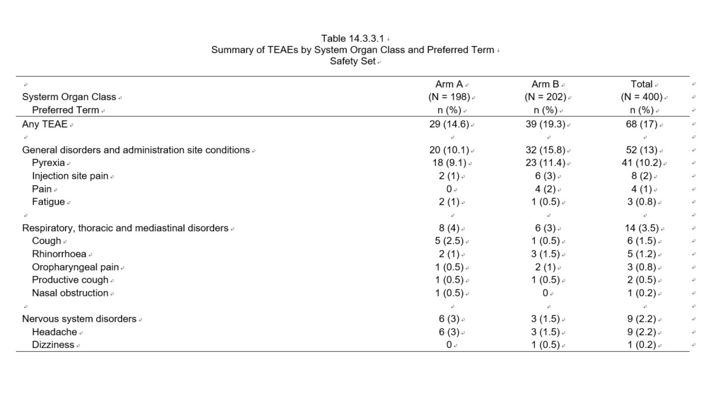

R输出AE summary by SOC and PT
R
Tidyverse
r2rtf
在临床试验有关不良事件（AE）的安全性分析中，TEAE by SOC and PT的table较为常见，我们尝试用R来完成分析并输出report.
今天重点介绍的R package: r2rtf 用于生成TFLs RTF.
读取需要用到的ADaM数据集。
下列变量是ADSL和ADAE中需要用到的变量的label.
| ADaM | Variable | Label |
|---|---|---|
| ADSL/ADAE | USUBJID | Unique Subject Identifier |
| ADSL/ADAE | SAFFL | Safety Population Flag |
| ADSL | TRT01AN | Actual Treatment for Period 01(N) |
| ADAE | TRTAN | Actual Treatment (N) |
| ADAE | AEBODSYS | Body System or Organ Class |
| ADAE | AEDECOD | Dictionary-Derived Term |
通过ADSL计算安全性分析人群的(N = XX)
为ADAE生成合计（Total）的分组。
计算TEAE table的第一行 Any TEAE的频数。
计算每个SOC的频数，需要注意SOC按照例数的倒序排序。
#calculate the freq by SOC
teae_soc <- adae1 %>%
group_by(TRTAN, AEBODSYS) %>%
dplyr::summarise(n = n_distinct(USUBJID)) %>%
ungroup()`summarise()` has grouped output by 'TRTAN'. You can override using the
`.groups` argument.计算每个SOC and PT的频数，同样需要注意按照SOC，PT的倒序排序。
#calculate the freq by SOC and PT
teae_pt <- adae1 %>%
group_by(TRTAN, AEBODSYS, AEDECOD) %>%
dplyr::summarise(n = n_distinct(USUBJID)) %>%
ungroup()`summarise()` has grouped output by 'TRTAN', 'AEBODSYS'. You can override using
the `.groups` argument.teae_pt_ord <- teae_pt %>%
filter(TRTAN == 9) %>%
left_join(select(teae_soc_ord,AEBODSYS, ord_soc),
by = c("AEBODSYS")) %>%
arrange(ord_soc, desc(n), AEDECOD) %>%
mutate(ord_pt = row_number())
teae_pt1 <- left_join(teae_pt,
select(teae_pt_ord, AEBODSYS, AEDECOD, ord_soc, ord_pt),
by = c("AEBODSYS", "AEDECOD")) %>%
mutate(ord = 2) %>%
arrange(ord_soc, ord_pt)合并形成最终的数据集，并计算百分比。
#combine SOC and PT
final <- rbind.fill(teae_any, teae_soc1, teae_pt1) %>%
left_join(bign,
by = c("TRTAN")) %>%
mutate(percent = round(100*n/bign, 1),
col = str_c(as.character(n),
" (",
as.character(percent),
")"),
item = case_when(is.na(AEDECOD) ~ AEBODSYS,
TRUE ~ str_c(" ", AEDECOD))) %>%
pivot_wider(id_cols = c(item, ord, ord_soc, ord_pt),
names_from = TRTAN,
values_from = col,
names_prefix = "col",
values_fill = "0") %>%
arrange(ord_soc, ord, ord_pt) %>%
group_split(ord_soc) %>%
map_dfr(~add_row(.x, .after = Inf)) %>%
select(item, col1, col2, col9)由于report中需要输出(N = XX)，提前做一个object.
通过r2rtf 定制table的样式，并输出RTF文件。
#TFLs report
report <- final %>%
rtf_page(nrow = 25,
orientation = "landscape",
border_first = "single",
border_last = "single") %>%
rtf_title(
title = c(
"Table 14.3.3.1",
"Summary of TEAEs by System Organ Class and Preferred Term",
"Safety Set"
),
text_font_size = 9,
text_font = 4 #Arial
) %>%
rtf_footnote(
footnote = c(
"Abbreviations: TEAE = Treatment-emergent adverse event.",
"Note: MedDRA Version 25.1."
),
text_font = 4, #Arial
as_table = FALSE
) %>%
rtf_colheader(
colheader = " | Arm A | Arm B | Total",
col_rel_width = c(4, rep(1, 3)),
text_justification = c("l", rep("c", 3)),
border_left = NULL,
border_right = NULL,
text_font = 4
) %>%
rtf_colheader(
colheader = colhead_bign,
col_rel_width = c(4, rep(1, 3)),
text_justification = c("l", rep("c", 3)),
border_top = NULL,
border_left = NULL,
border_right = NULL,
text_font = 4
) %>%
rtf_colheader(
colheader = "{^\\s} {^\\s} Preferred Term | n (%) | n (%) | n (%)",
col_rel_width = c( 4, rep(1, 3)),
text_justification = c("l", rep("c", 3)),
text_indent_first = 2,
border_top = NULL,
border_left = NULL,
border_right = NULL,
text_font = 4
) %>%
rtf_body(text_justification = c("l", rep("c", 3)),
col_rel_width = c( 4, rep(1, 3)),
text_font = 4,
border_left = NULL,
border_right = NULL) %>%
rtf_source(
source = "[Source: Listing 16.2.7 Adverse Event]",
text_justification = "l",
text_font = 4,
as_table = FALSE
) %>%
rtf_encode() %>%
write_rtf("t_14_3_3_1.rtf")最后是成果展示了。
